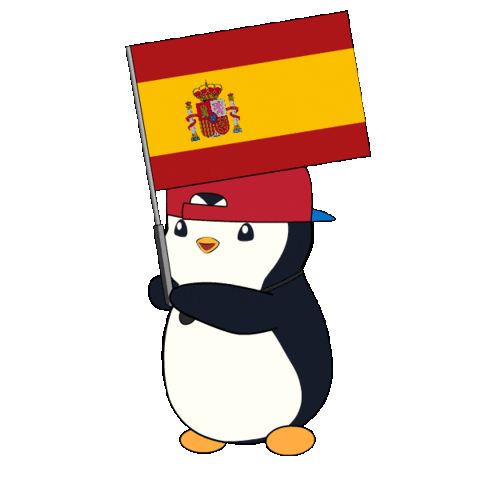
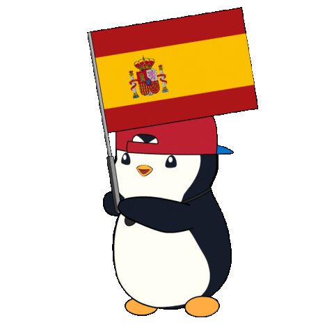

Hey, ich bin Felipe und willkommen auf meiner Webseite :)
Ich bin Felipe Lorenzo Martínez und studiere Mathematik an der Uni Bonn.
Im Moment arbeite ich an meiner Bachelorarbeit am Forschungsinstitut für Diskrete Mathematik mit Stefan Hougardy.
Hier sind ein paar Dinge, die ich gemacht habe und die vielleicht interessant sind.
Wenn du Lust auf schlecht geschriebenen C++-Code für zu spezifische Probleme hast, schau mal auf meinem GitHub vorbei.
Ich bin auch aktiv in der Fachschaft Mathematik! Wenn du sehen willst, was wir so machen, kannst du unsere Website hier besuchen (ich manage die Seite auch).
Und wenn ich mal wieder was Nützliches anstelle, findest du das sicher auch hier.
Danke für deinen Besuch und vergiss nicht Marios Wörter: